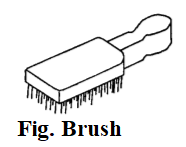
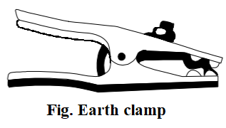
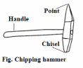
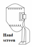
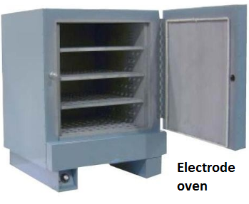
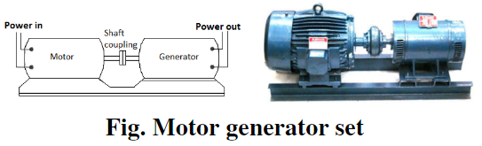
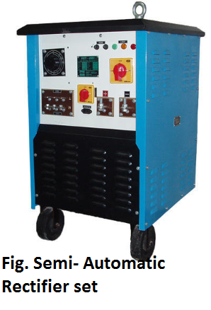

Chapter 3: Arc welding machine and equipments¶
Introduction¶
In arc welding process, an electric arc between an electrode and a workpiece or between two electrodes is used to weld base metals. Majority of arc welding processes uses shielding gas while rest uses coating or fluxes to prevent weld joint from surrounding environment.
Figure of welding machine with different parts¶
1) Power source:¶
AC and DC both can be used for electric arc welding. Power source is required to maintain the arc between electrode and the base metal. The factors that influence on the selection of a power source are efficiency, duty cycle, floor space, initial and running costs, versatility of equipment, type of electrode to be used, availability of power source (AC or DC) and required output. Both AC and DC are used in electric arc welding according to demand of welding process being used.
I) DC Generator:¶
It is run either by an electric motor or diesel engine.
It supplied voltage in range of 15 to 50 volts and output current in range 200 to 600 ampere.
Polarities will be fixed
II) AC Transformer:¶
It is static piece of equipment used either for raising or lowering the voltage of an AC supply with a corresponding decrease in the current.
It is low cost and ease of operation
Noiseless in nature
It has variable polarity
The following factor influences the selection of a power source:
Available power source (AC or DC)
Types of electrodes and base metals to be used
Required output
Duty cycle
Efficiency
Initial costs and running costs
Available floor space
Versatility of equipment
2) Welding cables:¶
It is required for conduction of current from the power source through the electrode holder, the arc, the workpiece and finally back to the welding power source. These cables are insulated copper or aluminum cables.
3) Welding electrodes:¶
An electrode is a piece of wire or a rode of a metal or alloy, with or without coatings. An arc is setup between workpiece and electrode. Welding electrodes can be classified as:
- Consumable Electrodes
Bare ElectrodesCoated Electrodes
- Non-consumable Electrodes
Carbon or Graphite ElectrodesTungsten Electrodes
Consumable electrode is made of different metals and their alloys. The end of this electrode starts melting when arc is struck between the electrode and workpiece resulting electrode itself as a filler metal.
Non-consumable electrodes do not melt during welding. These electrodes are made up of high melting point materials like carbon, pure tungsten or alloy tungsten.
4) Googles:¶
Protective googles are used to protect the eyes of the welder from the light sparks produced during welding.
5) Wire brush:¶
Before the welding is performed, the surface of workpiece is cleaned using wire brush.

6) Protective clothing¶
Welder or an operator should wear protective clothes with long sleeves like apron to secure body from direct exposure of heat.
7) Earth clamp:¶
The earth clamp is clamped to the welding table or the job itself so that electrical circuit is complete. The reason to do so is to minimize the chances of shock due to insulation or other failure in machine.

9) Chipping hammer:¶
A chipping hammer is used to remove slags from workpiece after welding is done.

11) Electrode holder:¶
It is used for holding the electrode manually and to conduct the current to it. It varies in size from 150 to 500 Amps.

12) Hand screen:¶
A face shield is also used to protect eyes from the light sparks produced during welding.

14) Welding gauges:¶
It allows us to determine the size of joints, joint width and height, depth and width of preparation, angle of bevel, included angle, root gap, dept of root face, convexity, smoothness of transition weld to the base metal and leg length.
15) Current regulating hand wheel:¶
Current regulation is achieved by movement of a lever or wheel, which varies the strength of the magnetic field between primary and secondary windings. This is the better way of achieving smooth control of current in compare to other method which uses reactor or a choke.
16) Electric oven:¶
Electric oven is used for storing electrodes according to the electrode supplier recommendation because temperature requirements varies for different electrodes types. For good and sound weld electrodes should be heated properly.

17) Center punch:¶
It is the tool to mark the pattern of welding. The depth of the punch should not exceed 0.3 mm because the arc cannot ignite on a center punch struck too deeply.
18) Welding booth:¶
It is the room required for welding which helps to prevent the coworkers from sparks, gases and noise. It should have ventilation with good flow of air. Walls should be painted with black, brown or yellow to prevent welding light from reflecting.
{kind=link}
19) Welding table:¶
Table provides great comfort while welding in small jobs. Its legs are made from angle iron or pipe and a fixed thick plate is placed over the legs. The place on table can be constructed in such way it can be moved up and down according to our requirement. On one of is leg, a box is made to keep electrodes and a plate is made on another leg to hold earthing clamp.
{kind=link}
{kind=link}
Classification of welding machine¶
- On the basis of AC and DC current, machine set can be categorized in:
Motor Generator Set
Engine Driven Generator Set
AC or Transformer Set
Rectifier Set
Motor Generator Set¶
This set is used to convert voltage, phase and frequency of power. It is a set or collection of motor and a generator mechanically coupled through the common shaft. It mainly converts electric power to any other type of power. Its arc voltage ranges from 15 to 45 volts but open circuit voltage ranges from 60 to 1000. It has the efficiency of 60%. We can even change the polarity according to our need which is helpful while welding thin and thick metals. Similarly, Motor generator set has capacity of 20 to 1000 amperes. The diagram of a motor generator set is shown below,
Motor Generator are made targeting single or multiple operator. We are provided with following tools to keep machine under our control.
Startor
Polarity Switch
Volt/Ampere Switch
Current Control
Startor
The main work of startor is to start and stop the Machine. After connecting to the power supply, we should push green button to start the machine and push red button to stop the machine.
Polarity Switch
We need to change the polarity to weld the metals considering the qualities of metal and electrode. So, to change that polarity we use this polarity switch.
Direct Current (DC) always flows from positive pole to negative pole whereas Alternating Current (AC) flow in both direction (positive to negative pole and vice versa for 50 to 60 times a second). Therefore, we can only perform polarity change in DC but not in AC.
Volt/Ampere Switch
The main function of this switch is to show the supplied electric current in volt and ampere. Some machine has two different meters to show voltage and current reading while other have single meter to show both readings. Some machines even use this switch to show the polarity.
Current Control
Its main function is to supply necessary current according to electrode used and thickness of workpiece or base metal.
Engine Driven Generator Set¶
Engine Driven Generator Set can perform welding with the help of diesel or petrol. Since it is not depended in electric supply, we can take it to anywhere necessary. However, it is noisy and expensive to buy and maintain. It can be expensive for working and maintenance.
Necessity of D.C. Generator
To convert AC supply into DC
To perform welding in places with no electric power supply
To select the polarity and to weld non-ferrous metals easily
Parts of D.C. Generator
Main Poles
Body or Yoke
Armature
Commutator
Carbon Brushes
Fan
Prime Mover
AC or Transformer Set¶
This machine is special type of Step-Down Transformer which increases or decreases the line voltage or ampere to required voltage or ampere as needed in arc welding.
1. It is cheaper in cost2. This machine is used widely because of its light weight, smaller size, less noisy, with no movable parts, less power consumption and higher functionalities.3. It has low arc blow.4. It can perform task in both Single Phase and Three Phase whereas Single phase is used for light task while latter is used for heavy tasks.
While performing welding it is important to control and set current. There are different techniques to achieve control the current and they are as follows:
i. Movable Coil Methodii. Variable Resistance Methodiii. Variable Choke Method
AC Transformer:¶
- AC Transformer transforms the supplied main AC supply into required AC supply for welding. It is of two types:
Air Cooled
Oil Cooled
Air Cooled (no oil requirement):¶
Oil Cooled (oil required):¶
Care and Maintenance of AC Transformer:¶
Rectifier Set¶
This type of set provides both AC and DC current. Normally, switch or lever are provided to start the machine. It is a type of AC Transformer but has extra Rectifier stack coated with Selenium which converts AC to DC. Rectifier set has better efficiency than motor generator set and can weld all types of metal. It can also be used as Tig machine and is noiseless as well as controllable.
Care and Maintenance of Rectifier:
Power source¶
Necessity of Power Source:
Selection of Power Source:
To select the proper Power Source, we need to follow the following points carefully:
Comparison of arc welding machine set¶
|
Rectifier set |
Transformer set |
|
|---|---|---|---|
Initial cost |
It is expensive. |
It is cheaper than motor generator and costlier than transformer. |
It is cheaper. |
Weight |
It is heavier. |
It is lighter than motor generator and costlier than transformer. |
It is lighter. |
Floor space |
It requires large space. |
It does not require large space. |
It too does not require large space. |
Moving parts |
It has movable parts. |
It has no movable parts. |
It too does not have movable parts. |
Maintenance |
It is expensive for maintenance. |
It is easier for maintenance. |
It is easier for maintenance. |
Power Input |
It needs more electric power. |
It needs less electric power. |
It needs less electric power. |
Noise |
It is noisy. |
It is less noisy. |
It is less noisy. |
Arc blow |
It has arc blow problem. |
Arc blow problems appears in DC but not in AC current. |
It does not have arc blow problem. |
Life |
It works for long span of time. |
It has life span of about 7 years. |
It has the longest lifespan among all. |
Stability of Arc |
It does not have arc stability. |
It has arc stability. |
It is difficult to maintain arc stability. |
Metal |
Both ferrous and non-ferrous metals can be welded. |
Both ferrous and non-ferrous metals can be welded. |
Only ferrous metals can be welded. |
Efficiency |
It has efficiency of 60%. |
It has efficiency of 84%. |
It has efficiency of 67%. |
Duty cycle¶
Duty cycle is the ratio of arcing time to the weld cycle time multiplied by 100. Welding cycle time is either 5 minutes as per European standard or 10 minutes as per American standard. If arcing time is 5 minutes continuously then as per European and American standards duty cycle is 100% and 50 % respectively. At 100% duty cycle minimum current is drawn.
The welding current which can be drawn at a duty cycle can be calculated from given equation:
DR x IR2 = I2 x D100
Where, DR = Required duty cycle
IR = Current at required duty cycle
I = Current at 100% duty cycle
D100 = 100% duty cycle
Polarity¶
Polarity helps to understand how much electricity is passed in which pole and in which direction on arc welding. It results from the fact that electrical circuit has both negative and positive pole. DC flows in one direction resulting in constant or fixed polarity. Similarly, AC flows in both direction (half time one direction and other half in other direction) changing its polarity 120 times per second with 60-hertz current.
- Polarity can be changed in two ways:
Straight Polarity
Reverse Polarity
Importance of Polarity:¶
The electric circuit is created when we turn on the welder has a negative and a positive pole and this property is called polarity. Polarity is important in welding because selection of right polarity affects the strength and quality of the weld. Selection of wrong polarity will lead to lots of spatter, bad penetration and lack of control of our welding
Choice of Polarity:¶
We choose polarity based on the quality and size of workpiece and type of electrolyte. We can choose polarity as instructed by the manufacturer.
Identification of Wrong Polarity:¶
Straight polarity¶
If electrode holder is connected to negative pole and Earthing Clamp is connected to positive pole, then such polarity is called Straight Polarity. Here, current flows from electrode to workpiece. Similarly, 2/3 of the total arc heat is generated in workpiece while rest of the heat energy is focused in electrode.
Advantages Straight polarity:
{kind=link}
Reverse polarity¶
If electrode holder is connected to positive pole and earthing clamp is connected to negative pole, then such polarity is called Reverse Polarity. Here, current flows from workpiece to electrode. Also, (2/3) rd of the total arc hear is generated in electrode holder and rest of the heat energy is generated in workpiece.
Advantages of Reverse Polarity:
{kind=link}
Advantages of AC arc welding machine over DC¶
Advantages DC arc welding machine over AC¶
Care and maintenance of arc welding machine¶
If we want to keep our generator’s work performance in same pace and to increase its lifespan as well, we need to perform following statements carefully: